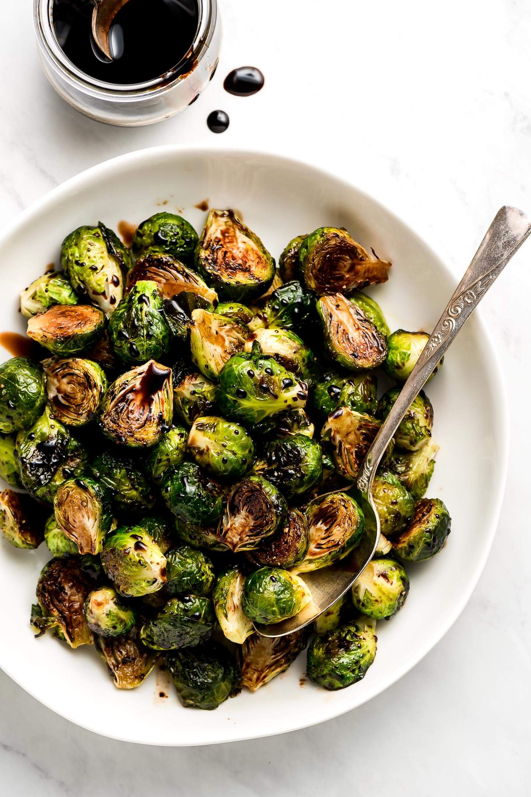

Blackberry Cobbler
Origin: Colonial US Source: Ree Drummond (The Pioneer Woman) Category: Dessert
Cobbler is my favorite dessert and I love it with all kinds of fruit. My dad usually makes this blackberry cobbler recipe from The Pioneer Woman (on Food Network), Ree Drummond. I love to eat it with a scoop of vanilla ice cream on top.
Recipe Ingredients
- Stick of butter 🧈
- Granulated sugar
- Self-rising flour
- Milk 🥛
- Blackberries (frozen or fresh)
Recipe Steps
- Melt butter in a microwavable dish. Pour 1 cup of sugar and flour into a mixing bowl, whisking in milk. Mix well. Then, pour in melted butter and whisk it all together.
- Butter a baking dish. Rinse and pat dry the blackberries.
- Pour the batter into the buttered baking dish. Sprinkle blackberries over the top of the batter; distributing evenly. Sprinkle 1/4 cup sugar over the top.
- Bake in the oven at 350˚ for 1 hour, or until golden and bubbly. If you desire, sprinkle an additional teaspoon of sugar over the cobbler 10 minutes before it’s done.
Additional Food images


Double Chocolate Bundt Cake
Origin: American Source: Marjorie Crawford (A Pinch of Healthy) Category: Dessert
My mom has been making this cake ever since a neighbor introduced her to the recipe when I was a child. We lost the original recipe, but found this one that tastes the same. I ask my mom to make it every year for my birthday.
Recipe Ingredients
- Yellow cake mix
- Instant chocolate pudding mix
- Sugar
- Avocado oil 🥑
- Eggs 🥚
- Sour cream
- Semi-sweet chocolate chip morsels 🍪
Recipe Steps
- Preheat oven to 350 degrees farenheit.
- In a medium mixing bowl, combine the cake mix, pudding mix and sugar, using a whisk to break up any lumps.
- In a separate large mixing bowl, combine the water, oil, eggs and sour cream and mix on low for about a minute.
- Slowly incorporate the dry ingredients until they are combined, making sure not to over-mix.
- Fold in the chocolate chips.
- Spray a bundt pan well with cooking spray.
- Add batter, and bake at 350 until cooked through, about 50 minutes.
- Allow cake to cool before removing from bundt pan. Place on a cake stand and use the surface to cover the top of the bundt pan (cake stand will be upside down to start) while carefully flipping it over to where the bundt opening is on bottom, right up next to the plate. Then, carefully lift off the bundt pan.
- Use a fine mesh strainer to sprinkle on powdered sugar for garnish. This helps it to sprinkle more evenly and pretty, plus it strains out any lumps.
Additional Food images

Crispy Brussel Sprouts
Origin: American Source: My own recipe Category: Side dish Crispy brussel sprouts are my favorite vegetable to cook and I love to have them as a side for dinner at least once per week. I serve them on a bed of dijon mustard and top them with balsamic glaze.
Recipe Ingredients
- Brussel sprouts
- Olive oil
- Salt 🧂
- Pepper
- Red pepper flakes 🌶
- Balsamic glaze
- Dijon mustard 🍯
Recipe Steps
- Wash brussel sprouts, then chop stems off and remove any wilted leaves. Cut the brussel sprouts in half.
- In a medium mixing bowl, toss the halved brussel sprouts in a tablespoon of olive oil. Then season to taste with salt, black pepper, and red pepper flakes.
- Bake for 25-30 minutes at 425 degrees farenheit.
- Spoon a dollop of dijon mustard on to the plate, placing the brussel sprouts on top.
- Finally, drizzle the brussel sprouts with balsamic glaze.
Additional Food images
Pumpkin Bread
Origin: American Source: My Baking Addiction Category: Breakfast, Dessert
I love to make pumpkin bread during the fall. I usually just make the kind from a box mix, but when I'm home my mom bakes it with real pumpkin. It's also good with pepitas on top for an extra crunch.
Recipe Ingredients
- 15 oz. can of pumpkin puree 🎃
- Eggs 🥚
- Vegetable oil
- Vanilla extract
- Sugar
- All-purpose flour
- Baking soda
- Salt 🧂
- Pumpkin pie spice 🎃🧂
Recipe Steps
- Preheat oven to 350°F. Grease and flour two 8.5 x 4 x 2.5 inch loaf pans.
- In the bowl of a stand mixer fitted with the paddle attachment or in a large bowl with an electric mixer, combine pumpkin, eggs, oil, water, vanilla and sugar until well blended.
- In a large bowl, whisk together the flour, baking soda, salt, and pumpkin pie spice until combined.
- Stir the dry ingredients into the pumpkin mixture until just blended. Pour batter into the prepared pans.
- Bake in preheated oven for 60-70 minutes or until a toothpick inserted in the center comes out clean.
Additional Food images


Baked Ham and Cheese Sliders
Origin: American Source: Allrecipes Category: Breakfast, Party food
My mom makes these ham and cheese sliders every year for our Christmas brunch. My whole family loves them, especially the Hawaiian rolls.
Recipe Ingredients
- Butter 🧈
- Dijon mustard 🍯
- Worcestershire sauce
- Poppy seeds
- Dried minced onion 🧅
- 24 Hawaiian sandwich rolls 🍞
- Thinly sliced cooked deli ham 🍖
- Thinly sliced swiss cheese 🧀
Recipe Steps
- Preheat the oven to 350 degrees F (175 degrees C). Grease a 9x13-inch baking dish.
- Mix butter, Dijon mustard, Worcestershire sauce, poppy seeds, and dried onion in a bowl.
- Separate the tops from the bottoms of the rolls; arrange the bottom pieces in a layer in the prepared baking dish. Layer about 1/2 of the ham onto the rolls; add a layer of Swiss cheese and top with remaining ham slices.
- Place the tops of the rolls onto the sandwiches. Pour mustard mixture evenly over the rolls.
- Bake in the preheated oven until the rolls are lightly browned and the cheese has melted, about 20 minutes. Slice into individual rolls through the ham and cheese layers to serve.